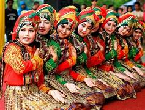
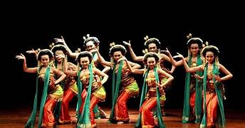
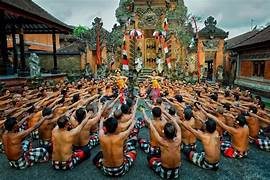

Tari Pendet (Bali)

Tari penyambutan lembut dengan gerakan tangan halus, awalnya untuk upacara pemujaan di pura.
Sejarah: Tari Pendet berasal dari Bali dan merupakan simbol penyambutan dewa maupun tamu. Makna gerakan tangan adalah persembahan bunga dan doa.
Tari Saman (Aceh)

Tari cepat, kompak, dengan tepukan tangan dan gerakan ritmis.
Sejarah: Tari Saman diciptakan oleh masyarakat Gayo di Aceh. Gerakan cepat melambangkan persatuan dan kebersamaan komunitas.
Tari Jaipong (Jawa Barat)

Tari energik khas Sunda, memadukan gerakan ekspresif dan musik tradisional Sunda.
Sejarah: Tari Jaipong dikembangkan pada 1960-an di Bandung. Makna gerakan mencerminkan kegembiraan dan ekspresi masyarakat Sunda.
Tari Reog Ponorogo (Jawa Timur)
Tari pertunjukan dengan topeng besar, kostum warna-warni, dan gerakan dramatis.
Sejarah: Tari Reog menceritakan legenda Kerajaan Ponorogo, keberanian prajurit, dan simbol kekuatan kultural daerah.
Tari Kecak (Bali)

Tari kolosal dengan banyak penari pria duduk melingkar, mengucapkan “cak” berirama.
Sejarah: Tari Kecak dikembangkan pada abad ke-20, mengisahkan cerita Ramayana. “Cak” melambangkan suara kolektif yang magis.
Tari Legong (Bali)
Tarian klasik Bali yang indah dan elegan, dengan gerakan tangan dan mata ekspresif.
Sejarah: Tari Legong muncul di Bali sebagai tarian istana, menekankan keanggunan, estetika, dan disiplin tari Bali klasik.